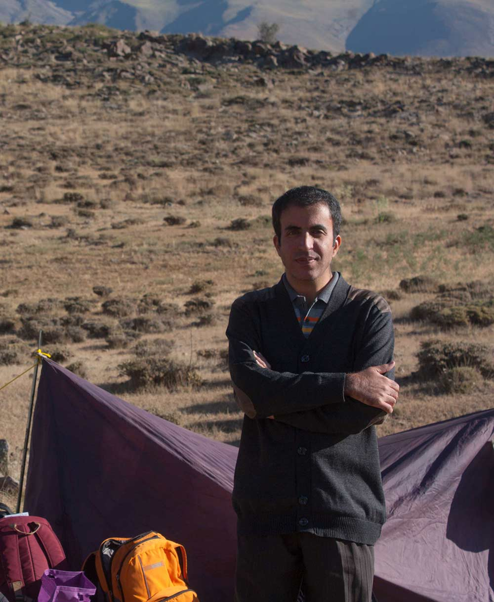
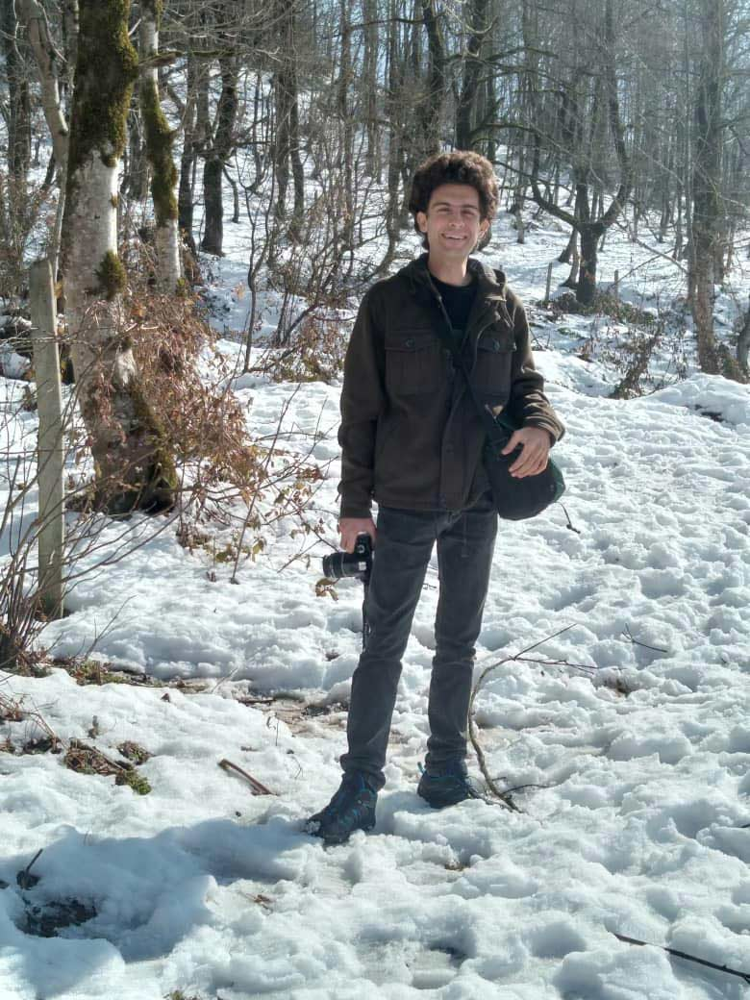

معرفی اعضای گروه نجوم کاوش، فعال در تهران و دماوند

کارشناس فیزیک ، رصدگر باسابقه آسمان شب ، مدرس نجوم برای کودکان و نوجوانان ، پژوهشگر نجوم رادیویی ، طراح ابزار آموزشی نجوم برای کودکان و یکی از بنیانگذاران گروه نجوم کاوش | فعال در دماوند.

هنرمند تجسمی و عکاس آسمان شب ، عکاس برگزیده از سوی بنیاد آسمان تاریک ، مدرس عکاسی آسمان شب ، رصدگر اجرام اعماق آسمان و یکی از بنیانگذاران گروه نجوم کاوش | فعال در تهران .